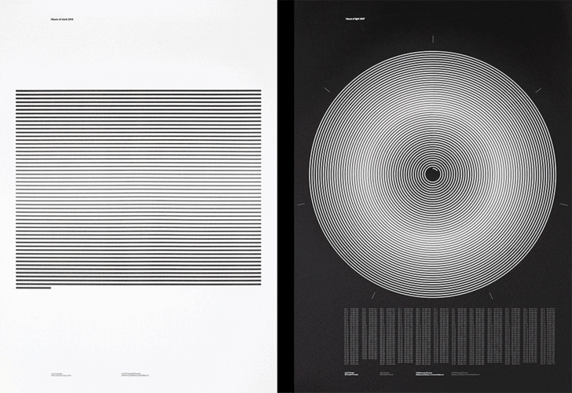

Quantum Computers Explained
Quantum computing and the limits of Human technology explained by the exceptional Kurzgesagt team.
Quantum computing and the limits of Human technology explained by the exceptional Kurzgesagt team.
This is brilliant: Volvo test the toughness of it’s latest FMX truck letting a four year old girl drive it ( with the safety of a remote controller ).
A fantastic portrait of master woodturner Steven Kennard, and his fantastic work.
Fantastic series of illustrations potraiting social networks by Ivan Belikov

For its annual “Light Calendars,” London-based design studio Accept & Proceed visualizes the fluctuating length of daylight for each passing year with a series of stunningly detailed black and white prints
Adidas milled one continuous piece of leather, to various thickness, to form the upper of this shoe.
“all things change in a dynamic environment, your effort to remain as you are is what limits you”